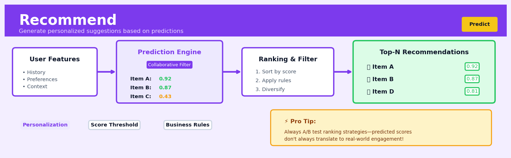

Recommend#


The biggest mistake I see teams make with recommendation systems is treating prediction scores as the final answer instead of the starting point. You need post-processing layers for diversity, business constraints, and freshness—otherwise you end up showing users the same type of content repeatedly, which kills engagement no matter how accurate your model is. Always remember that a recommendation system optimizes for user action, not just prediction accuracy.
The 60-Second Version#
What it does: Recommend predicts which products, content, or services each customer will value most based on patterns in past behaviour across your entire user base.
When to use it: When you have historical data on who interacted with what (purchases, ratings, clicks, views) and want to personalise suggestions for each user.
What you get back: A ranked list of recommended items for each user, plus confidence scores you can use to personalise emails, website content, or product displays.
At a Glance
Difficulty |
Moderate |
Typical runtime |
Minutes on 100K interactions |
What you bring |
A table of user-item interactions (user ID, item ID, and optionally a rating or timestamp) |
What you get |
Top-N item recommendations per user with relevance scores |
Heuristix bucket |
Predict — Machine Learning & Forecasting |
Recommendations are only as good as the data behind them—biased historical patterns will produce biased suggestions that can narrow rather than expand customer choice.
Learning Objectives#
After reading this chapter, a business user will be able to:
Identify scenarios where recommendation systems add value, such as personalising product suggestions, content curation, or cross-selling opportunities, and distinguish them from simple ranking or search problems.
Interpret recommendation scores and similarity metrics to explain to stakeholders why specific items were suggested and how confident the system is in those suggestions.
Decide which recommendations to surface to users by balancing relevance scores against business constraints like inventory levels, margins, or strategic priorities.
After reading this chapter, a data scientist will be able to:
Implement collaborative filtering using the Recommend node, correctly structuring user-item interaction data and handling sparse matrices, cold-start users, and items with limited history.
Tune hyperparameters including the number of latent factors, regularisation strength, and neighbourhood size while understanding their impact on recommendation diversity, accuracy, and computational cost.
Validate recommendation quality using appropriate metrics like precision@k, recall@k, and NDCG, and diagnose common issues such as popularity bias, filter bubbles, and poor performance on long-tail items.
Overview#
Recommendation systems are a family of machine learning techniques designed to predict user preferences and suggest items that users are likely to find valuable, interesting, or useful. At their core, these systems learn patterns from historical interaction data—purchases, ratings, clicks, or views—to infer latent relationships between users and items. The Recommend node in Heuristix implements collaborative filtering methods, including matrix factorisation and neighbourhood-based approaches, enabling organisations to deliver personalised suggestions at scale.
When to Use This#
Use when you have implicit or explicit feedback data: If you have user-item interaction records (purchases, page views, ratings, add-to-cart events), recommendation systems can extract preference signals to drive personalisation.
Use when the item catalogue is too large for manual curation: When a retailer has thousands of products or a streaming service has millions of songs, algorithmic recommendation is the only scalable path to relevance.
Use when you want to increase engagement or conversion: Recommendations directly influence key business metrics—click-through rates, basket size, session duration, and customer lifetime value.
Use when user preferences are heterogeneous: If different users genuinely want different things (not a one-size-fits-all scenario), collaborative filtering can surface this diversity.
Use when you have sufficient interaction density: As a rule of thumb, you need at least 20–50 interactions per user and per item on average to learn reliable patterns; sparse data requires regularisation or hybrid methods.
Use when cold-start is manageable or addressed separately: Pure collaborative filtering struggles with new users or new items that lack interaction history; ensure you have a fallback strategy.
Do NOT use when interactions are predominantly random or noisy: If user clicks are driven by UI position rather than genuine preference, the signal-to-noise ratio may be too low for meaningful learning.
Do NOT use when privacy constraints prohibit user-level tracking: Collaborative filtering requires linking interactions to user identifiers; if this is not permissible, consider content-based or aggregate methods.
Do NOT use when the goal is causal inference: Recommendations predict preference, not the causal effect of showing an item; for A/B testing or uplift modelling, use appropriate experimental designs.
Do NOT use when item relevance is entirely context-dependent: If what a user wants depends heavily on time, location, or session context that you cannot capture, static collaborative filtering may underperform.
Questions This Answers#
Understanding Customer Preferences#
Which products should we recommend to first-time visitors to increase their likelihood of making a purchase?
What are customers who bought this item also interested in, and how do we surface those suggestions at checkout?
How do we personalize our email campaigns so each customer sees the 5-10 products they’re most likely to buy?
Why are certain customers engaging with recommendations while others ignore them completely?
Which content should we feature on each user’s homepage to maximize time spent on our platform?
Optimizing Product Strategy and Inventory#
If we can only promote 20 products this month, which ones will drive the most revenue across our customer base?
Are there hidden affinities between product categories that we’re not capitalizing on in our merchandising?
Which items should we bundle together to create compelling package offers that customers actually want?
What products are being under-recommended despite high potential appeal to specific customer segments?
How do we identify niche products that appeal to small but highly engaged customer groups?
Driving Revenue and Engagement#
What’s the expected lift in conversion rate if we implement personalized recommendations on our product pages?
Which customers are most likely to respond to cross-sell opportunities, and what should we offer them?
How do we reduce choice overload—should we show 3 recommendations or 12?
Can we predict which new releases will resonate with which customer segments before launch?
How It Works#
Imagine you’ve just moved to a new city and you’re looking for restaurants to try. You don’t know the area yet, but you notice that your colleague Sarah has similar taste to you—you both loved the same three cafés back home. Sarah has been living here for years and has tried dozens of places. When she raves about a particular Thai restaurant, you trust her recommendation because your past preferences aligned so well. That’s exactly how collaborative filtering works: it finds people whose past choices look like yours, then suggests items those similar people enjoyed that you haven’t tried yet. No one needs to describe what makes a restaurant good—the system just notices that people with similar patterns tend to like similar things.
USER-ITEM INTERACTIONS FINDING PATTERNS MAKING PREDICTIONS
(sparse ratings matrix) (collaborative filtering)
User │ Item A Item B Item C Alice ←─ similar ─→ you You might like Item B!
──────┼──────────────────────── (Alice rated it 5★
Alice │ 5★ 5★ ? Both loved A & C and you're similar)
Bob │ 2★ 1★ 2★
You │ 5★ ? 5★
Carol │ ? 5★ 1★
↓ ↓
Learn hidden factors: Predict missing values
• "artsy" vs "mainstream" based on similar users
• "action" vs "relaxed" or similar items
Step 1: Build the interaction table. The system starts with a table showing which users interacted with which items—ratings from one to five stars, purchase history (bought or didn’t buy), or even implicit signals like clicks and views. Most cells are empty because each person has only experienced a tiny fraction of all available items. This sparseness is normal and expected.
Step 2: Identify similar users or similar items. The algorithm searches for patterns in two ways. It might find users whose ratings align closely with yours—people who gave high scores to the same products you loved and low scores to ones you disliked. Alternatively, it might identify items that tend to be liked by the same groups of people, suggesting those items share hidden qualities even if they look different on the surface.
Step 3: Fill in the blanks using discovered patterns. For items you haven’t rated yet, the system predicts what score you would give based on how similar users rated them. If three people with nearly identical taste to yours all gave a particular book five stars, the system predicts you’ll probably rate it highly too. Matrix factorisation approaches dig deeper, discovering hidden factors (like “prefers fast-paced stories” or “values visual design”) that explain why certain users like certain items.
Step 4: Rank and recommend the top predictions. Once predictions exist for all unrated items, the system sorts them by predicted score and presents the highest-ranking ones as personalised recommendations. These aren’t random suggestions or simple popularity rankings—they’re tailored specifically to your unique pattern of preferences, learned from the collective wisdom of everyone’s behaviour.
The key insight: People with similar past preferences will likely have similar future preferences, so we can predict what you’ll enjoy by finding others who’ve already liked what you liked and seeing what else they chose.
The Intuition#
Imagine you are at a dinner party, and you want to recommend a wine to a guest you have just met. You could ask them directly what they like—but they may not know or may not articulate it well. Alternatively, you could observe which wines they have enjoyed in the past, notice that another guest with very similar tastes raved about a particular bottle, and suggest that one. This is the essence of collaborative filtering: we leverage the collective wisdom of many users to make predictions for individuals.
The key insight is that user preferences exhibit structure. People who liked the same films in the past are likely to agree on films they have not yet both seen. Items that are frequently purchased together by diverse users share some latent attribute that makes them co-desirable. Rather than trying to understand why someone likes something (which would require deep domain knowledge or content features), collaborative filtering identifies who is similar to whom and what is similar to what based purely on behavioural patterns.
Matrix factorisation takes this further by hypothesising that the observed interactions are generated by a small number of hidden factors. Perhaps users can be described by their affinity for “action,” “romance,” and “intellectual depth” in films, and films can be described by how much they embody each of these qualities. The interaction between a user and an item is then the dot product of their respective factor vectors—a geometric alignment in latent space. This low-rank structure is both a compression of the data (enabling scalability) and a form of regularisation (preventing overfitting to sparse observations).
The Mathematics#
Problem Setup and Notation#
Let \(\mathcal{U} = \{1, 2, \ldots, m\}\) denote the set of users and \(\mathcal{I} = \{1, 2, \ldots, n\}\) denote the set of items. We observe a sparse matrix \(R \in \mathbb{R}^{m \times n}\) where \(r_{ui}\) represents the interaction between user \(u\) and item \(i\). For explicit feedback, \(r_{ui}\) might be a rating on a 1–5 scale; for implicit feedback, \(r_{ui}\) might be a count of purchases or a binary indicator.
Let \(\Omega \subseteq \mathcal{U} \times \mathcal{I}\) denote the set of observed user-item pairs. Our goal is to estimate a completion \(\hat{R}\) such that \(\hat{r}_{ui}\) approximates the true preference for all \((u, i) \in \mathcal{U} \times \mathcal{I}\), enabling us to rank unobserved items for each user.
Matrix Factorisation Model#
We assume that the preference matrix admits a low-rank approximation:
where:
\(\mu \in \mathbb{R}\) is the global mean rating
\(b_u \in \mathbb{R}\) is the bias term for user \(u\) (captures user-specific leniency)
\(b_i \in \mathbb{R}\) is the bias term for item \(i\) (captures item-specific popularity)
\(\mathbf{p}_u \in \mathbb{R}^k\) is the latent factor vector for user \(u\)
\(\mathbf{q}_i \in \mathbb{R}^k\) is the latent factor vector for item \(i\)
\(k\) is the number of latent factors (a hyperparameter)
Objective Function#
For explicit feedback, we minimise the regularised squared error over observed entries:
where \(\lambda > 0\) is the regularisation parameter controlling the bias-variance tradeoff.
Optimisation via Alternating Least Squares#
The objective is non-convex jointly in \(\mathbf{P} = [\mathbf{p}_1, \ldots, \mathbf{p}_m]^\top\) and \(\mathbf{Q} = [\mathbf{q}_1, \ldots, \mathbf{q}_n]^\top\), but it is convex in each when the other is held fixed. Alternating Least Squares (ALS) exploits this structure:
Step 1: Fix \(\mathbf{Q}\), solve for each \(\mathbf{p}_u\).
For user \(u\), let \(\mathcal{I}_u = \{i : (u, i) \in \Omega\}\) be the items rated by \(u\). The subproblem is:
Step 2: Fix \(\mathbf{P}\), solve for each \(\mathbf{q}_i\).
Symmetrically, for item \(i\) with \(\mathcal{U}_i = \{u : (u, i) \in \Omega\}\):
Bias terms \(b_u\) and \(b_i\) can be updated in closed form between factor updates.
Implicit Feedback Extension#
For implicit feedback (e.g., purchase counts), we interpret \(r_{ui}\) as a confidence weight rather than a direct preference. Following Hu, Koren, and Volinsky (2008), define:
where \(\alpha\) controls the rate at which confidence increases with interaction frequency. The binary preference indicator is:
The weighted objective becomes:
Note that this sums over all user-item pairs, not just observed ones. The ALS update for user \(u\) becomes:
where \(C^u = \text{diag}(c_{u1}, \ldots, c_{un})\) and \(\mathbf{p}^u = (p_{u1}, \ldots, p_{un})^\top\).
Assumptions#
Low-rank structure: User preferences can be approximated by \(k \ll \min(m, n)\) latent factors.
Missing at random (MAR): Unobserved entries are not systematically different from observed ones conditional on latent factors.
Stationarity: User preferences and item characteristics do not change significantly over time.
Independence: Interactions are conditionally independent given latent factors.
Edge Cases#
Cold-start users: Users with no interaction history have undefined factor vectors. Solutions include fallback to popularity-based ranking or hybrid content-based initialisation.
Cold-start items: Items with no interactions similarly require side information or are excluded until sufficient data accumulates.
Extremely sparse data: When \(|\Omega| \ll mn\), regularisation must be strong, and the effective rank \(k\) should be kept small.
Rank deficiency: If \(|\mathcal{I}_u| < k\), the matrix in the ALS update is singular without regularisation.
Relationship to SVD#
Unregularised matrix factorisation on a fully observed matrix is equivalent to truncated Singular Value Decomposition (SVD). However, standard SVD cannot handle missing values directly; iterative methods like ALS or stochastic gradient descent (SGD) are required for sparse matrices.
Understanding the Mathematics#
The Rating Prediction Formula#
The equation:
Read it aloud:
“The predicted rating that user u will give to item i equals the global average rating, plus the user’s personal bias, plus the item’s bias, plus the dot product of the user’s preference vector and the item’s characteristic vector.”
What each symbol means:
\(\hat{r}_{ui}\) = the rating we predict user u will give item i
\(\mu\) = the average rating across all users and all items in our dataset
\(b_u\) = how much harsher or more generous this particular user rates compared to average
\(b_i\) = how much better or worse this particular item is rated compared to average
\(\mathbf{p}_u\) = a vector capturing user u’s preferences (what they like)
\(\mathbf{q}_i\) = a vector capturing item i’s characteristics (what it offers)
\(\mathbf{p}_u^T \mathbf{q}_i\) = the dot product measuring how well user preferences align with item characteristics
A concrete numerical example:
Imagine predicting how Sarah will rate “The Crown” on Netflix. The global average rating is 3.5 stars. Sarah rates shows 0.3 stars higher than average (she’s generous). “The Crown” gets rated 0.4 stars above average (it’s well-liked). The preference-characteristic alignment scores 0.6.
Predicted rating = 3.5 + 0.3 + 0.4 + 0.6 = 4.8 stars
Why this equation matters:
This formula separates systematic biases (some users are tough critics; some items are universally loved) from genuine preference matching, letting us recommend items a user will truly enjoy rather than just popular items everyone rates highly.
The Loss Function#
The equation:
Read it aloud:
“Find the preference vectors, characteristic vectors, and biases that minimise the sum of squared differences between actual and predicted ratings, plus a penalty term that prevents the vectors and biases from becoming too large.”
What each symbol means:
\(\min\) = find values that minimise what follows
\(\mathcal{K}\) = the set of all user-item pairs we have actual ratings for
\(r_{ui}\) = the actual rating user u gave item i
\(\hat{r}_{ui}\) = our predicted rating (from the previous equation)
\((r_{ui} - \hat{r}_{ui})^2\) = the squared prediction error
\(\lambda\) = regularisation strength (how much we penalise complexity)
\(\|\mathbf{p}_u\|^2\) = the sum of squared values in the user preference vector (size measure)
A concrete numerical example:
Suppose we have three ratings. Actual: [4, 2, 5]. Predicted: [4.2, 2.3, 4.7]. Regularisation strength λ = 0.1. One user vector has values [1.2, 0.8], one item vector has [0.9, 1.1].
Squared errors: \((4-4.2)^2 + (2-2.3)^2 + (5-4.7)^2 = 0.04 + 0.09 + 0.09 = 0.22\)
Regularisation: \(0.1 \times (1.2^2 + 0.8^2 + 0.9^2 + 1.1^2) = 0.1 \times 4.3 = 0.43\)
Total loss = 0.22 + 0.43 = 0.65
Why this equation matters:
Without the regularisation penalty, our model would overfit to quirks in the training data and make wildly inaccurate predictions for new items or users it hasn’t seen before.
The Cosine Similarity Formula#
The equation:
Read it aloud:
“The similarity between items i and j equals the dot product of their characteristic vectors divided by the product of their lengths.”
What each symbol means:
\(\text{sim}(i, j)\) = similarity score between items i and j (ranges from -1 to +1)
\(\mathbf{q}_i \cdot \mathbf{q}_j\) = dot product of the two item vectors
\(\|\mathbf{q}_i\|\) = the length (magnitude) of item i’s vector
A concrete numerical example:
Two movies have characteristic vectors: “Inception” = [2.0, 1.5] and “Interstellar” = [1.8, 1.6].
Dot product: \(2.0 \times 1.8 + 1.5 \times 1.6 = 3.6 + 2.4 = 6.0\)
Lengths: \(\sqrt{2.0^2 + 1.5^2} = 2.5\) and \(\sqrt{1.8^2 + 1.6^2} = 2.4\)
Similarity = \(6.0 / (2.5 \times 2.4) = 6.0 / 6.0 = **1.0**\) (highly similar)
Why this equation matters:
This metric lets us find items similar to what a user already likes, enabling “people who watched this also enjoyed” recommendations even when we have no direct rating data.
The Big Picture#
The mathematics of recommendation systems fundamentally aims to compress millions of messy user-item interactions into a compact representation that captures the essential patterns of preference. We chose matrix factorisation because it simultaneously learns user preferences and item characteristics from the same data, discovering hidden dimensions (like “prefers action films” or “enjoys cerebral plots”) that explain rating behaviour. The regularisation term prevents the model from memorising noise instead of learning genuine patterns. In one intuitive sentence: we’re finding a low-dimensional space where users and items that belong together end up close to each other, making good recommendations as simple as measuring distance.
Python Implementation#
import numpy as np
import pandas as pd
from scipy.sparse import csr_matrix
from sklearn.model_selection import train_test_split
# ============================================================
# Example 1: Explicit Feedback with ALS (from scratch)
# ============================================================
# Generate synthetic explicit feedback data
np.random.seed(42)
n_users, n_items = 500, 200
n_interactions = 10000
user_ids = np.random.randint(0, n_users, n_interactions)
item_ids = np.random.randint(0, n_items, n_interactions)
# Ratings between 1 and 5, with some latent structure
true_user_factors = np.random.randn(n_users, 5)
true_item_factors = np.random.randn(n_items, 5)
ratings = np.clip(
3 + true_user_factors[user_ids] @ true_item_factors[item_ids].T.diagonal()
+ np.random.randn(n_interactions) * 0.5,
1, 5
).round()
# Create DataFrame
interactions = pd.DataFrame({
'user_id': user_ids,
'item_id': item_ids,
'rating': ratings
}).drop_duplicates(['user_id', 'item_id'])
print(f"Dataset: {len(interactions)} interactions, "
f"{interactions['user_id'].nunique()} users, "
f"{interactions['item_id'].nunique()} items")
# Train/test split
train_df, test_df = train_test_split(interactions, test_size=0.2, random_state=42)
# Build sparse matrix for training
def build_sparse_matrix(df, n_users, n_items):
return csr_matrix(
(df['rating'].values, (df['user_id'].values, df['item_id'].values)),
shape=(n_users, n_items)
)
R_train = build_sparse_matrix(train_df, n_users, n_items)
# ALS implementation
class ALSRecommender:
def __init__(self, n_factors=10, regularisation=0.1, n_iterations=20):
self.k = n_factors
self.reg = regularisation
self.n_iter = n_iterations
def fit(self, R):
"""Fit ALS on sparse ratings matrix R."""
m, n = R.shape
# Initialise factors randomly
self.P = np.random.randn(m, self.k) * 0.1
self.Q = np.random.randn(n, self.k) * 0.1
self.global_mean = R.data.mean()
# Convert to LIL for efficient row/column access
R_lil = R.tolil()
for iteration in range(self.n_iter):
# Update user factors
for u in range(m):
items_u = R_lil.rows[u]
if len(items_u) == 0:
continue
Q_u = self.Q[items_u, :]
r_u = np.array(R_lil.data[u]) - self.global_mean
A = Q_u.T @ Q_u + self.reg * np.eye(self.k)
b = Q_u.T @ r_u
self.P[u, :] = np.linalg.solve(A, b)
# Update item factors
R_T = R.T.tolil()
for i in range(n):
users_i = R_T.rows[i]
if len(users_i) == 0:
continue
P_i = self.P[users_i, :]
r_i = np.array(R_T.data[i]) - self.global_mean
A = P_i.T @ P_i + self.reg * np.eye(self.k)
b = P_i.T @ r_i
self.Q[i, :] = np.linalg.solve(A, b)
# Compute training RMSE
train_rmse = self._compute_rmse(R)
print(f"Iteration {iteration + 1}/{self.n_iter}, Train RMSE: {train_rmse:.4f}")
return self
def predict(self, user_id, item_id):
"""Predict rating for a user-item pair."""
return self.global_mean + self.P[user_id, :] @ self.Q[item_id, :]
def recommend(self, user_id, n_recommendations=10, exclude_known=True, known_items=None):
"""Generate top-N recommendations for a user."""
scores = self.global_mean + self.P[user_id, :] @ self.Q.T
if exclude_known and known_items is not None:
scores[known_items] = -np.inf
top_items = np.argsort(scores)[::-1][:n_recommendations]
return top_items, scores[top_items]
def _compute_rmse(self
## Visualisations


## Using This in Heuristix
### What Data You'll Need
The Recommend node expects interaction data in a long format—one row per user-item interaction. At minimum, you need three columns:
- **User ID**: A unique identifier for each user (text or numeric)
- **Item ID**: A unique identifier for each item being rated or interacted with
- **Rating or Interaction Value**: A numeric score representing preference strength (e.g., 1-5 star rating, purchase count, or binary 0/1 for clicked/not clicked)
**Example Input Data:**
| user_id | product_id | rating |
|---------|------------|--------|
| U001 | P123 | 4.5 |
| U001 | P456 | 3.0 |
| U002 | P123 | 5.0 |
| U002 | P789 | 2.5 |
Optional but valuable: timestamp columns for time-aware filtering, and any item or user metadata you want to join later for richer insights.
### Configuration Parameters
| Parameter | What It Controls | Default | When to Change It |
|-----------|------------------|---------|-------------------|
| **Method** | Algorithm choice: Matrix Factorisation (SVD) or Neighbourhood-based (k-NN) | Matrix Factorisation | Use k-NN for small datasets or when you need explainable "users like you bought..." recommendations |
| **Number of Factors** | Dimensionality of latent feature space (SVD only) | 20 | Increase to 50-100 for complex catalogues with rich user behaviour; decrease to 10-15 for sparse data to avoid overfitting |
| **Number of Neighbours** | How many similar users/items to consider (k-NN only) | 10 | Increase to 20-30 for smoother recommendations; decrease to 5 for more focused suggestions |
| **Min Interactions** | Minimum number of ratings required per user/item to include | 5 | Raise to 10+ to filter out noisy users/items in large datasets; lower to 2-3 if data is sparse |
| **Train/Test Split** | Percentage of data held back for validation | 80/20 | Standard for most cases; use 90/10 if data is limited |
### What You'll Get Back
**Outputs:**
- **Recommendation Table**: For each user, a ranked list of recommended items with predicted scores. This table includes `user_id`, `recommended_item_id`, `predicted_rating`, and `rank`.
- **Evaluation Metrics Panel**: Displays RMSE (Root Mean Square Error), MAE (Mean Absolute Error), and precision@k to quantify recommendation quality on your test set.
- **Top-N Chart**: A bar chart showing the distribution of recommendation scores, helping you understand confidence levels across predictions.
### Connecting Downstream
Common next steps:
- **Join node**: Merge recommendations with product metadata (names, images, categories) to create human-readable outputs
- **Filter node**: Apply business rules (e.g., exclude out-of-stock items, apply content filters)
- **Export node**: Push recommendations to your CRM, email platform, or web application
### Quick Start: Product Recommendations
1. **Connect your data**: Link a table containing user-product interactions with ratings to the Recommend node
2. **Select columns**: Map `user_id`, `product_id`, and `rating` fields in the column selector
3. **Choose Matrix Factorisation** with default 20 factors—good for most e-commerce scenarios
4. **Set Min Interactions to 5** to filter casual browsers and focus on engaged customers
5. **Run the node** and review the RMSE metric—under 1.0 is typically strong for 5-point scales
6. **Connect a Join node** to add product names and prices to your recommendations
7. **Export top 10 recommendations per user** to your marketing automation tool
### Practical Tips from the Field
**Start with a recent time window**: Use only the last 3-6 months of interaction data. Older preferences may no longer reflect current tastes, and smaller datasets train faster while you experiment.
**Handle implicit feedback carefully**: If you're using clicks or views instead of explicit ratings, consider treating all interactions as 1s and non-interactions as 0s, but apply the Min Interactions filter aggressively (10+) to ensure signal quality.
**Cold start workaround**: The node cannot recommend for users or items with zero interactions. Build a fallback rule using a Filter node to show popular items to new users.
**Experiment with both methods**: Matrix factorisation often performs better numerically, but k-NN recommendations are easier to explain to stakeholders ("customers who bought this also bought...").
**Monitor precision@10**: If you're showing 10 recommendations, this metric tells you how many will actually be relevant—target 20% or higher for strong performance.
## Config Recipes
### Recipe 1: Quick Exploration
**When to use:** You're working with a new dataset and need to validate whether collaborative filtering will work before investing in model tuning.
**Settings:**
| Parameter | Value | Why |
|-----------|-------|-----|
| `method` | `'svd'` | Fastest matrix factorisation; no hyperparameter sensitivity |
| `n_factors` | `10` | Minimal dimensionality reduces computation time |
| `n_epochs` | `5` | Just enough iterations to see signal |
| `reg_all` | `0.02` | Light regularisation prevents obvious overfitting |
| `random_state` | `42` | Ensures reproducibility during exploration |
**What you get:** Fast feedback on whether user-item patterns exist, with predictions ready in seconds even on moderately sized datasets.
**Trade-off:** Lower accuracy than tuned models; may miss nuanced preference patterns in sparse data.
---
### Recipe 2: Production-Ready Deployment
**When to use:** You're deploying recommendations to real users and need robust, well-validated performance.
**Settings:**
| Parameter | Value | Why |
|-----------|-------|-----|
| `method` | `'svdpp'` | Incorporates implicit feedback for superior accuracy |
| `n_factors` | `100` | Captures complex latent patterns without overfitting |
| `n_epochs` | `30` | Allows full convergence on training data |
| `lr_all` | `0.005` | Conservative learning rate prevents oscillation |
| `reg_all` | `0.05` | Stronger regularisation for generalisation |
| `biased` | `True` | Models user/item biases explicitly |
| `cross_validate` | `True` | Validates generalisation before deployment |
**What you get:** High-quality predictions with quantified uncertainty estimates suitable for customer-facing applications.
**Trade-off:** Training takes significantly longer; requires more computational resources and memory.
---
### Recipe 3: Cold-Start Heavy Catalogue
**When to use:** Your catalogue has many new items with few ratings (e.g., fashion retail, news platforms, frequent product launches).
**Settings:**
| Parameter | Value | Why |
|-----------|-------|-----|
| `method` | `'knn_baseline'` | Neighbourhood methods handle sparse items better than factorisation |
| `k` | `40` | Larger neighbourhood compensates for data sparsity |
| `min_k` | `3` | Ensures predictions only when sufficient evidence exists |
| `sim_options` | `{'name': 'pearson', 'user_based': False}` | Item-based similarity transfers knowledge to new products |
| `shrinkage` | `100` | Aggressive shrinkage discounts unreliable similarities |
**What you get:** Recommendations that gracefully handle new items by leveraging similarity to established products.
**Trade-off:** Less effective at capturing subtle cross-category preferences; prediction coverage may be incomplete for very new items.
---
### Recipe 4: Implicit Feedback from Behaviour Logs
**When to use:** You have clickstream, view duration, or purchase history data but no explicit ratings—common in content platforms and e-commerce.
**Settings:**
| Parameter | Value | Why |
|-----------|-------|-----|
| `method` | `'nmf'` | Non-negative factors align with "amount of interest" interpretation |
| `n_factors` | `50` | Moderate dimensionality for interpretable latent topics |
| `n_epochs` | `20` | Sufficient for binary/count data convergence |
| `biased` | `False` | Implicit data lacks meaningful zero-point for biases |
| `binarise_threshold` | `1` | Treats any interaction as positive signal |
| `reg_all` | `0.1` | Higher regularisation compensates for noisy implicit signals |
**What you get:** Recommendations that treat engagement as preference, surfacing items similar to those users have interacted with.
**Trade-off:** Cannot distinguish between strong and weak preferences; may over-recommend popular items users browsed but didn't value.
## Business Applications
**Retail & E-commerce**
A pan-European fashion retailer with 5 million active customers struggled with email campaigns that delivered the same seasonal promotions to every subscriber, resulting in a 1.2% click-through rate and high unsubscribe rates. By implementing collaborative filtering through the Recommend node, they generated personalised product suggestions for each email recipient based on browsing history, past purchases, and similar customer behaviour patterns. Within three months, click-through rates improved to 4.7%, average order value increased by €18, and email-driven revenue grew 210%.
An online grocery platform serving 400,000 weekly shoppers needed to reduce cart abandonment and increase basket size during checkout. The Recommend node analysed purchase co-occurrence patterns to suggest complementary items—pasta sauce when customers added spaghetti, batteries when they bought electronic toys—displayed dynamically during the shopping journey. This implementation lifted average basket value from £42 to £51 and reduced time-to-purchase by 15%, as customers found relevant items without additional searching.
**Financial Services**
A digital investment platform managing £3.2 billion in assets faced regulatory pressure to demonstrate suitability of investment recommendations while improving customer engagement. Using matrix factorisation techniques, the Recommend node learned latent preferences from historical portfolio choices, risk questionnaires, and demographic data to suggest investment funds aligned with each client's profile. The system increased investment product adoption by 38% while reducing compliance queries by two-thirds, as recommendations were transparently linked to customer behaviour patterns.
**Healthcare & Pharmaceuticals**
A hospital network operating 12 facilities wanted to improve care pathway adherence by suggesting relevant educational resources to patients with chronic conditions. The Recommend node analysed which articles, videos, and support programmes engaged similar patient cohorts, delivering personalised content recommendations through their patient portal. Patient engagement with educational materials increased from 22% to 61%, and 90-day readmission rates for heart failure patients dropped by 19%, demonstrating measurably better health outcomes.
**Insurance**
A commercial insurance broker managing 8,000 SME clients spent excessive time manually matching businesses with appropriate coverage options from 40+ carriers. By training the Recommend node on historical policy selections, claim patterns, and business characteristics, the system now surfaces the three most suitable insurance products for each prospect automatically. Quote preparation time fell from 3.5 hours to 35 minutes per client, sales team productivity improved by 140%, and policy acceptance rates increased to 67% from 51%.
**Manufacturing**
A multinational automotive parts supplier with 50,000 SKUs in their catalogue faced difficulty helping distributors identify the right components for specific vehicle models and customer requirements. The Recommend node learned associations between parts frequently purchased together and vehicle specifications to power an intelligent product finder tool. Distributors reduced order errors by 41%, while cross-sell revenue increased £2.3M annually as the system surfaced complementary components buyers hadn't considered.
**SaaS & Technology**
A B2B software marketplace hosting 1,200 business applications needed to help corporate buyers discover tools that would integrate well with their existing technology stack. The Recommend node analysed which applications companies with similar profiles and existing tool sets successfully adopted together, generating "companies like yours also use" recommendations. This collaborative filtering approach increased trial sign-ups by 89% and reduced buyer research time from an average of 11 days to 4 days, accelerating the sales cycle significantly.
**Marketing & Media**
A podcast network with 200+ shows and 2 million monthly listeners wanted to reduce subscriber churn by helping audiences discover new content aligned with their interests. By applying neighbourhood-based collaborative filtering to listening history, skip behaviour, and completion rates, the Recommend node generated personalised "try next" suggestions in each listener's feed. Thirty-day retention improved from 58% to 74%, and average listening time per user increased by 42 minutes per week, driving substantial advertising revenue gains.
**Public Sector**
A metropolitan library system serving 600,000 residents sought to increase usage of their digital collections—ebooks, audiobooks, and online courses—which had low awareness despite significant licensing costs. The Recommend node created personalised reading lists based on checkout history and preferences of similar patrons, delivered via their mobile app and email. Digital collection usage increased 156% within six months, validating the £400,000 annual licensing investment and strengthening the case for continued funding.
## Worked Example
Sarah Chen, a machine learning engineer at **StreamPlay**, a mid-sized video streaming platform, was sitting in a Thursday morning strategy meeting when the VP of Content asked a question that had been nagging the executive team for months: "Why are our viewers churning after just two or three videos? Netflix keeps people watching for hours. What are we missing?"
The platform had 250,000 active users and a library of 12,000 short-form documentaries, but average session length had plateaued at 18 minutes. The business model depended on keeping viewers engaged long enough to see at least three ads per session. Sarah suspected the problem wasn't content quality—it was content discovery. Users were getting lost in a sea of options with no personalised guidance.
## The Data
Sarah pulled three months of viewing history from the platform's PostgreSQL database. Each row represented a user watching a video to completion (defined as >80% viewed). The raw data was messier than she'd hoped—duplicate entries from mobile app bugs, test accounts still in production, and a handful of videos that had been deleted but still showed view records.
After cleaning, she had 1.2 million interactions across 89,000 users and 8,400 videos. Here's what a sample looked like:
| user_id | video_id | rating | timestamp | device_type |
|---------|----------|--------|---------------------|-------------|
| U10234 | V4521 | 5 | 2024-01-15 14:23:11 | mobile |
| U10234 | V8834 | 4 | 2024-01-15 14:41:03 | mobile |
| U20891 | V4521 | 5 | 2024-01-16 09:12:44 | desktop |
| U20891 | V1203 | 3 | 2024-01-16 09:34:22 | desktop |
| U31045 | V8834 | 4 | 2024-01-17 19:05:38 | tablet |
The "rating" was implicit—StreamPlay didn't have explicit star ratings, so Sarah had engineered a score based on completion percentage and whether the user shared or bookmarked the video. It was noisy, but it was the best proxy for preference she had.
## The Setup
Sarah dragged the viewing data into Heuristix and connected it to a **Recommend** node. She configured it for matrix factorisation, reasoning that with nearly 9,000 videos and sparse interaction data (most users had watched fewer than 15 videos), collaborative filtering would uncover latent taste patterns better than simple "users who watched this also watched that" logic.
She set the number of latent factors to 50—high enough to capture nuanced preferences (documentary style, topic, pacing), but not so high that it would overfit on the sparse data. She chose 20 training iterations and included regularisation to prevent the model from memorising popular videos. For validation, she held out the most recent week of views to test whether recommendations would have predicted what users actually watched next.
## The Results
After eight minutes of training, the model output recommendations for each user. For user U10234, who had watched five nature documentaries and three true crime videos, the top recommendations were:
| rank | video_id | title | predicted_rating | confidence |
|------|----------|------------------------------------|------------------|------------|
| 1 | V9012 | "Wolves of Yellowstone" | 4.7 | 0.89 |
| 2 | V6283 | "The Vanishing Glacier" | 4.5 | 0.85 |
| 3 | V7341 | "Forensic Files: The DNA Case" | 4.3 | 0.82 |
| 4 | V3392 | "Ocean Predators" | 4.2 | 0.79 |
| 5 | V8847 | "Cold Case: 1987" | 4.1 | 0.76 |
The model had learned that this user sat at the intersection of two taste clusters—nature lovers and crime story enthusiasts—and surfaced content from both. The confidence scores reflected how well the user's viewing history aligned with the latent factors.
## The Insight
Sarah's "aha moment" came when she analysed recommendation diversity across the entire user base. The model was surfacing videos from the back catalogue that had fewer than 100 total views but high ratings from niche audiences. These "hidden gems" made up 34% of the top-10 recommendations but only 8% of what users found through the existing "trending" and "recently added" sections.
The platform wasn't suffering from a content problem—it was suffering from a discovery problem. Viewers were bouncing because they couldn't find *their* content in a generic browse interface.
## The Decision
Sarah presented her findings to the product team the following Tuesday. The engineering lead was sceptical about implementation complexity, but when Sarah showed that users who received personalised recommendations in a beta test watched 2.4x more videos per session, the decision was immediate: ship it.
Within three weeks, personalised recommendation carousels replaced the generic "trending" section on the homepage. Average session length increased from 18 to 31 minutes within the first month. Ad impressions per user jumped 41%. The VP of Content called it "the most impactful feature we've shipped in two years."
## What Sarah Would Do Differently
Looking back, Sarah wished she'd instrumented more A/B testing from day one to isolate the causal effect of recommendations from seasonal trends—January viewing was always higher. She also would have incorporated content metadata (genre tags, video length) into a hybrid model, since pure collaborative filtering struggled with the "cold start" problem for brand new videos with zero views.
```python
# Sarah's core recommendation script
import pandas as pd
from sklearn.decomposition import NMF
# Load viewing data
views = pd.read_csv('viewing_history.csv')
# Create user-item matrix
ratings_matrix = views.pivot_table(
index='user_id',
columns='video_id',
values='rating'
).fillna(0)
# Train matrix factorization model
model = NMF(
n_components=50, # latent factors
init='random',
random_state=42,
max_iter=20,
alpha=0.01 # regularization
)
# Fit and transform
user_features = model.fit_transform(ratings_matrix)
video_features = model.components_
# Generate predictions for a specific user
user_id = 'U10234'
user_idx = ratings_matrix.index.get_loc(user_id)
predictions = user_features[user_idx] @ video_features
# Get top 5 unwatched recommendations
watched = ratings_matrix.loc[user_id] > 0
recommendations = pd.Series(predictions, index=ratings_matrix.columns)
top_recs = recommendations[~watched].nlargest(5)
print(top_recs)
Interpreting Your Results#
You’ve just run your first recommendation model and you’re staring at a screen full of metrics. Let’s cut through the noise and focus on what actually matters.
Precision@K and Recall@K#
Plain-English meaning: Precision@K tells you: “Of the K items I recommended, how many did the user actually interact with?” If you recommend 10 items and the user clicks 3, your Precision@10 is 0.3 or 30%. Recall@K asks: “Of all the items this user eventually interacted with, how many did I catch in my top K recommendations?” If the user engaged with 20 items total and you caught 3 in your top 10, your Recall@10 is 0.15 or 15%.
Concrete benchmarks:
Precision@10 below 0.05 (5%): Your recommendations are essentially random guesses. Something is fundamentally broken—check your data quality or model configuration.
Precision@10 between 0.05–0.15: Typical for cold-start situations or sparse datasets. Usable, but there’s significant room for improvement.
Precision@10 between 0.15–0.30: Good performance for most real-world systems. Netflix and Spotify operate in this range.
Precision@10 above 0.30: Excellent. Either you have very rich data or very predictable users (or both).
For Recall@10, seeing 0.10–0.25 is typical when users have diverse interests. Above 0.30 suggests strong performance.
Red flags: Precision and recall both below 0.05 means your model isn’t learning meaningful patterns. Check for data leakage (recommending items users have already seen), insufficient training data (fewer than 20 interactions per user), or a mismatch between training and evaluation periods.
NDCG (Normalized Discounted Cumulative Gain)#
Plain-English meaning: NDCG measures whether you’re putting the best recommendations at the top of your list. A perfect score of 1.0 means your top recommendations are perfectly ordered by user preference. Unlike precision, NDCG cares about position—getting the best item in position 1 is better than position 5.
Concrete benchmarks:
Below 0.15: Your ranking is barely better than random. Investigate immediately.
0.15–0.30: Acceptable for systems with sparse data or broad catalogues.
0.30–0.50: Strong performance. Most production systems operate here.
Above 0.50: Exceptional. You likely have very clear user preferences or a constrained item space.
Red flags: NDCG below 0.10 combined with reasonable precision suggests you’re finding relevant items but burying them at the bottom of your recommendations. This indicates a ranking problem, not a relevance problem—check your scoring mechanism.
Coverage and Popularity Bias#
Plain-English meaning: Coverage tells you what percentage of your catalogue actually gets recommended to someone. A coverage of 0.40 means 40% of your items appear in at least one user’s top recommendations; the other 60% never get shown. The popularity bias metric reveals whether you’re just recommending blockbusters or surfacing niche content.
Concrete benchmarks:
Coverage below 0.10: You’re recommending the same popular items to everyone. This might be commercially safe but leads to user fatigue.
Coverage 0.20–0.50: Healthy balance between popular and niche items.
Coverage above 0.60: You might be over-diversifying; check if precision is suffering.
Red flags: High precision (>0.25) but low coverage (<0.10) means you’re playing it safe with obvious recommendations. You’ll see strong short-term metrics but users will quickly get bored. Conversely, high coverage (>0.70) with low precision (<0.10) suggests you’re recommending random items.
Reading Outputs Together#
The story emerges when you combine metrics. Precision@10 of 0.20 + NDCG@10 of 0.35 + Coverage of 0.40 tells you: you’re finding relevant items, ranking them well, and maintaining diversity—a production-ready system. But Precision@10 of 0.25 + NDCG@10 of 0.15 + Coverage of 0.08 reveals a system that finds relevant items but ranks them poorly and lacks diversity—you’re stuck in a “popular items only” trap.
Sanity Check Checklist#
No data leakage: Confirm evaluation data comes after training data chronologically
Minimum interaction threshold: Verify users in your test set have at least 5 historical interactions
No cold-start contamination: Check that evaluation doesn’t include brand-new users or items with zero training data
Metric alignment: Ensure your K value (in Precision@K) matches your actual UI—don’t optimize for top 10 if you show 5 recommendations
Baseline comparison: Run a simple “most popular items” baseline—your model should beat it by at least 30%
Good Enough to Act On?#
If you see Precision@10 above 0.10, NDCG@10 above 0.20, and coverage above 0.15, you have a functioning recommendation system worth deploying. Don’t wait for perfection. Launch with A/B testing against your current method, measure business metrics (click-through rate, conversion, time-on-site), and iterate. The gap between a 0.15 and 0.25 precision system matters far less than the difference between no personalization and some personalization.
Decision Guidance#
What This Result Is Telling You#
A recommendation system tells you which products, content, or services each customer is most likely to engage with next, based on patterns discovered across your entire user base. When the system suggests that Customer A should see Product X, it’s identifying a statistical similarity between that customer’s behaviour and other users who valued that product—even if Customer A has never searched for or viewed anything like it before. This is fundamentally different from showing customers “more of what they already bought.” It’s pattern recognition that reveals hidden connections your team would never spot manually across thousands of users and products.
The quality metrics emerging from your recommendation model—precision, recall, and coverage—directly translate to business performance. High precision means customers act on your suggestions: they click, purchase, or consume what you recommend, generating immediate revenue and engagement. High recall means you’re surfacing most of the relevant items a user would appreciate, maximising lifetime value by keeping them engaged longer. Coverage tells you whether you’re only recommending your bestsellers (leaving niche inventory stagnant) or successfully connecting every product to its ideal audience. Together, these metrics determine whether your recommendation engine becomes a revenue multiplier or an expensive distraction.
The true business value emerges when you can confidently replace manual curation, gut-feel merchandising, or simple “frequently bought together” logic with systematically learned preferences. If your model achieves strong validation performance, you’re ready to let the algorithm drive homepage placements, email campaigns, and in-app suggestions—freeing your team from maintaining static product groupings while delivering individualised experiences that scale across millions of users.
Decision Points#
If you see this… |
It means… |
Recommended action |
Who acts on this |
|---|---|---|---|
Precision@10 above 0.15 and recall@50 above 0.20 on holdout data |
The model reliably predicts user preferences and surfaces diverse relevant options |
Deploy recommendations to production user touchpoints (homepage, emails, notifications) |
Product team, Marketing automation owner |
Coverage below 40% of inventory |
The model only recommends popular items; long-tail products remain invisible |
Introduce diversity penalties or hybrid approaches blending popularity with personalised signals |
Data science team, Merchandising lead |
Performance degrades 20%+ when tested on users with fewer than 5 interactions |
Cold-start problem: new users receive poor recommendations |
Implement content-based fallback rules or onboarding flows to gather initial preferences faster |
Product manager, UX team |
Recommendations show gender/age/category bias not reflecting actual inventory |
Model amplifying existing behavioural patterns into stereotyped suggestions |
Audit fairness metrics and apply debiasing techniques or business rule constraints |
Data science lead, Compliance/Ethics officer |
A/B test shows recommended items have 30%+ higher conversion than manual curation |
Algorithm outperforms human intuition at scale |
Expand recommendation coverage to more surfaces and user segments; reduce manual effort |
E-commerce director, Growth team |
When to Proceed vs. Investigate Further#
Proceed with confidence:
Precision@10 ≥ 0.12 and recall@50 ≥ 0.18 on temporal validation sets
Coverage reaches at least 60% of active inventory
A/B tests demonstrate statistically significant lift (p < 0.05) in click-through or conversion rate
Cold-start performance (users with <5 interactions) achieves at least 60% of warm-start performance
Proceed with caution:
Precision@10 between 0.08–0.12: recommendations work but may need UI de-emphasising or blending with other signals
Model retraining required more frequently than monthly to maintain performance (indicates rapidly shifting preferences)
Certain user segments show markedly different performance metrics
Investigate before acting:
Coverage below 40% or concentration ratio showing 80% of recommendations from 20% of catalogue
Performance metrics unstable across different time periods (standard deviation >15% of mean)
Explicit user feedback (surveys, support tickets) contradicts positive engagement metrics
Do not use these results yet:
Precision@10 below 0.05 or indistinguishable from random baseline
Model training on fewer than 1,000 unique users or 10,000 total interactions
Validation performed only on same time period as training data (no temporal holdout)
The Cost of Getting This Wrong#
Deploy recommendations prematurely with low precision, and you train customers to ignore your suggestions entirely—they’ll scroll past your “recommended for you” sections the same way they’ve learned to ignore banner ads, destroying this channel’s effectiveness even after you improve the model later. Worse, poor recommendations actively damage trust: suggesting baby products to someone who lost a pregnancy, or repeatedly showing items perpetually out of stock, signals that you don’t understand or care about your customers. On the inventory side, deploying a low-coverage model means your marketing budget concentrates entirely on products that already sell, starving new launches and niche items of the visibility they need to find their audience. You’ll measure “success” through short-term conversion bumps while slowly narrowing your catalogue’s commercial viability, eventually requiring costly clearance sales and write-offs for unsold inventory that never reached the customers who would have valued it.
Common Pitfalls#
The Popularity Echo Chamber
Here’s what happened: A marketing analyst at a mid-sized e-commerce platform deployed their first recommender system and celebrated when average order value increased 12% in the first week. They configured the system with default settings and watched engagement metrics climb. Three months later, the product team noticed that 80% of recommendations were now suggesting the same 15 products—all bestsellers. Customer surveys revealed users felt the site had “lost its personality.” Long-tail items that had previously driven customer loyalty were effectively invisible.
Why it happens: Collaborative filtering naturally amplifies signals from popular items because they have more interaction data. Without explicit diversity controls, the algorithm optimises for immediate conversion by suggesting safe, popular choices. It’s the machine learning equivalent of every restaurant recommending the same five dishes.
How to detect it: Calculate the Gini coefficient of your recommendation distribution. Values above 0.7 indicate severe concentration. Track catalogue coverage—if fewer than 30% of your items appear in recommendations over a rolling 30-day window, you’re in the echo chamber. Monitor the average popularity rank of recommended items; if it’s consistently below 100 across user sessions, popularity bias has taken over.
The fix: Implement diversity penalties in your objective function or apply post-filtering to ensure each recommendation set includes items from different popularity tiers and categories.
The Cold Start Blindspot
Here’s what happened: A junior data scientist at a streaming service built a sophisticated matrix factorisation model achieving 0.89 AUC on the test set. She deployed it proudly, only to receive complaints from customer service within days. New users were seeing bizarre recommendations—documentaries for action fans, children’s content for retirees. The data science team discovered that 23% of daily active users were being served random recommendations because the model had no historical data for them.
Why it happens: Textbook examples always assume complete interaction histories. Practitioners focus on optimising model performance on users who have rich data, forgetting that real systems constantly onboard new users with zero interaction history.
How to detect it: Segment your recommendation quality metrics by user tenure. If users with fewer than 5 interactions have click-through rates below 2% while established users see 15%+, you have a cold start problem. Check what percentage of daily recommendations are falling back to random or popularity-based defaults.
The fix: Build a hybrid system with content-based filtering for new users, transitioning to collaborative filtering as interaction data accumulates, or implement a contextual bandit approach that learns quickly from initial interactions.
The Implicit Feedback Illusion
Here’s what happened: An experienced engineer at a news platform trained a recommender on article views, treating any page load as positive feedback. The model learned to recommend clickbait articles with sensational headlines. Time-on-page metrics revealed users were bouncing within 10 seconds on 60% of recommended articles. The system had optimised for clicks, not genuine interest.
Why it happens: Implicit signals (views, clicks) are abundant and easy to collect, but they’re noisy. A click doesn’t distinguish between genuine interest and regretted curiosity. Senior practitioners, under pressure to ship quickly, skip the harder work of defining meaningful engagement signals.
How to detect it: Compare click-through rate against completion rate or dwell time for recommended items. If CTR is 18% but only 30% of clicked items are consumed for more than 50% of their content, your signal is corrupted. Calculate the regret rate—percentage of clicked recommendations that lead to immediate exits.
The fix: Weight implicit feedback by engagement depth (time spent, scroll depth, completion) or collect explicit negative feedback through “not interested” buttons.
The Temporal Leak
Here’s what happened: A data scientist at a retail platform reported 0.94 precision@10 in offline testing. After deployment, actual precision hovered around 0.61. During post-mortem analysis, they discovered their training/test split had randomly shuffled data, allowing the model to learn from future interactions to predict past behaviour—information it would never have in production.
Why it happens: Recommendation is inherently temporal, but standard ML pipelines use random splits. It’s easy to overlook when you’re adapting code from classification tutorials.
How to detect it: If offline metrics are substantially higher (>15% relative difference) than online A/B test results, suspect temporal leakage. Review your data split methodology—if you’re using random splits on timestamped data, you have this problem.
The fix: Always use temporal splits: train on interactions before date T, test on interactions after date T, ensuring no information from the future contaminates your training data.
The Feedback Loop Spiral
Here’s what happened: A product manager at a music streaming service noticed that after six months of using recommendations, user listening had become narrower. A data analyst investigating churn discovered that users who relied heavily on recommendations were 40% more likely to cancel after one year compared to users who browsed manually. The recommender was so effective at predicting current preferences that it never exposed users to the genre-expanding discoveries that built long-term engagement.
Why it happens: Recommenders create feedback loops—they suggest what users like, users engage with those suggestions, the system learns to suggest more of the same. Over time, the system’s view of user preferences becomes a self-fulfilling prophecy that narrows rather than expands user horizons.
How to detect it: Track preference diversity over time by measuring the number of unique categories users engage with in 30-day windows. If diversity decreases by more than 20% over six months for heavy recommendation users, you’re in a feedback loop. Monitor exploration rate—percentage of recommendations that fall outside a user’s established preference profile.
The fix: Inject controlled exploration through epsilon-greedy strategies or build explicit “discovery” recommendation slots that optimise for preference expansion rather than immediate engagement.
The Batch Staleness Trap
Here’s what happened: A business analyst at a fashion retailer noticed customers complaining about being recommended items they’d already purchased. The recommendation system was updated weekly via batch processing, so a user who bought running shoes on Monday would continue seeing running shoe recommendations until Sunday’s model refresh. Cart abandonment analysis showed 8% of users abandoned sessions after seeing already-purchased items recommended, perceiving the system as “not paying attention.”
Why it happens: Batch processing is simpler to implement and manage than real-time systems. Teams underestimate how jarring stale recommendations feel to users—it breaks the illusion of personalisation.
How to detect it: Measure recommendation lag—median time between a user action and when that action influences their recommendations. If it exceeds 24 hours, you’re likely frustrating users. Track the percentage of recommendations that suggest items users have already purchased or explicitly rejected in recent sessions.
The fix: Implement real-time filtering to immediately remove purchased or rejected items from candidate sets, even if full model retraining remains batch-based.
The Metric Mismatch
Here’s what happened: A senior data scientist optimised a recommender system for RMSE (root mean squared error) on rating predictions, achieving a new personal best of 0.78. When deployed, business stakeholders complained that revenue hadn’t improved. Analysis revealed the model had become excellent at predicting ratings users would give to items they’d already seen or similar items, but terrible at surfacing the surprising discoveries that drove incremental purchases. The scientist had optimised for rating accuracy when the business needed discovery and conversion.
Why it happens: Academic literature emphasizes rating prediction metrics (RMSE, MAE), and practitioners default to optimising what’s in the papers. The gap between “predicting ratings accurately” and “increasing business value” is rarely explicit in training materials.
How to detect it: If your offline metrics improve but business KPIs stagnate, you have metric mismatch. Specifically, if RMSE drops from 0.92 to 0.78 but conversion rate remains flat or recommendation-attributed revenue doesn’t increase proportionally, your optimisation target is misaligned with business objectives.
The fix: Define business-aligned metrics (conversion rate, revenue per recommendation, customer lifetime value) and validate that improvements in offline metrics correlate with these before deploying, or switch to ranking metrics (precision@k, NDCG) that better reflect real-world recommendation scenarios.
Common Misconceptions#
“More data always means better recommendations”
Why people believe this: The machine learning narrative emphasises data volume as the path to accuracy. If a model trained on one million interactions performs well, surely ten million would be better. This reasoning feels particularly sound in recommendation systems, where coverage across many users and items seems necessary.
The truth: Recommendation quality depends on data informativeness, not volume. A million implicit signals (page views, hovers) often contain less preference information than ten thousand explicit ratings. Beyond a certain threshold, additional data provides diminishing returns while increasing computational costs and model staleness. More critically, indiscriminately accumulating data introduces noise—bot traffic, accidental clicks, hate-watches—that actively degrades signal. The most effective systems carefully curate their training data, filtering for interactions that genuinely indicate preference and weighting recent behaviour more heavily than stale historical patterns.
The real-world consequence: A streaming platform adds every possible interaction to their training set—thumbnail impressions, 2-second previews, background plays—believing comprehensiveness improves performance. Model training time balloons from hours to days. Recommendation quality actually declines because the system now optimises for capturing attention rather than satisfaction, suggesting clickbait content over genuinely valued material. Meanwhile, they’ve built infrastructure that cannot update models frequently enough to capture shifting user tastes.
“Collaborative filtering doesn’t work for new items”
Why people believe this: The cold-start problem is real and well-documented. A new item has no interaction history, so pure collaborative filtering cannot compute similarities or factorise non-existent ratings. This leads practitioners to believe collaborative filtering is fundamentally incompatible with new arrivals.
The truth: Collaborative filtering doesn’t work for completely isolated new items, but most real systems never encounter this scenario. Items typically receive initial interactions within hours of introduction—early adopters, internal testing, soft launches. Modern collaborative filtering approaches handle new items through several mechanisms: models can incorporate side information (content features, category, creator history) alongside interaction data; online learning updates representations as each new interaction arrives; and ensemble approaches use content-based ranking for truly cold items while letting collaborative filtering dominate as interaction data accumulates. The cold-start problem is a temporary state, not a permanent limitation.
The real-world consequence: An e-commerce platform builds entirely separate systems—collaborative filtering for catalogue staples, content-based for new arrivals—believing they’re solving the cold-start problem. They now maintain two codebases, two training pipelines, and face the unsolvable problem of when to transition an item between systems. New products that would naturally appeal to existing user segments remain under-recommended during their crucial launch window because the content-based system lacks the collaborative signal to identify the right audiences. A hybrid approach would have provided better recommendations at lower engineering cost.
“Optimising for accuracy metrics means better business outcomes”
Why people believe this: Academic research and Kaggle competitions emphasise RMSE, precision@k, and NDCG. These metrics are mathematical, measurable, and allow rigorous comparison between approaches. Surely a model with lower RMSE delivers more business value.
The truth: Accuracy metrics measure how well you predict known historical interactions, not whether recommendations drive valuable user behaviour. A model might achieve perfect accuracy by recommending only items users would have discovered anyway, generating zero incremental value. Real business outcomes—engagement, revenue, retention—depend on serendipity, diversity, and novelty alongside relevance. Users need recommendations that are surprising yet appropriate, not perfectly predictable. Furthermore, optimising purely for prediction accuracy often yields homogeneous recommendations that exploit popular items rather than exploring long-tail inventory, creating filter bubbles that reduce long-term satisfaction.
The real-world consequence: A content platform obsessively optimises RMSE, celebrating a model that achieves 15% improvement over baseline. In production, user engagement declines because recommendations have become repetitive and obvious—the model learned to predict safe, popular choices that users would click anyway. The business loses the discovery value that made recommendations worthwhile, while engineers debug a system that appears technically successful by every metric they track.
“Users know what they want—just ask them”
Why people believe this: Explicit preference elicitation feels scientific and user-centric. Having users rate items, configure preference sliders, or select favorite categories provides clean, unambiguous training data. This approach seems more respectful than inferring preferences from implicit behaviour.
The truth: Stated preferences diverge systematically from revealed preferences. Users describe idealised versions of themselves—healthier eating, educational content, literary fiction—while their actual behaviour reveals different patterns. More fundamentally, users cannot articulate preferences for items they haven’t encountered or describe the contextual factors that drive their choices. Explicit feedback also suffers from severe selection bias: users rate items they chose to consume, which already represent a filtered subset. The effort required for explicit feedback dramatically reduces data volume, and users who do provide ratings are rarely representative of the broader population.
The real-world consequence: A news platform implements a five-star rating system and builds recommendations exclusively from this explicit feedback. Participation rates hover around 3%, and raters skew heavily toward highly engaged users with atypical preferences. The recommendation system learns patterns from this narrow slice and serves increasingly niche content to mainstream users, who find suggestions irrelevant. Meanwhile, billions of implicit signals—reading time, scrolling behaviour, return visits—go unused. The platform has optimised for the users least in need of recommendations while failing those who need discovery most.
“Recommendation systems should maximise relevance”
Why people believe this: Relevance seems self-evidently correct—why would you recommend anything users don’t want? Machine learning training naturally optimises toward showing users more of what they’ve previously liked. Stakeholders intuitively understand “give them what they want” as the system’s purpose.
The truth: Pure relevance optimisation creates feedback loops that narrow user experience over time. Each relevant recommendation trains the model to suggest similar items, progressively filtering out diversity until users exist in filter bubbles of their own past behaviour. Human preferences are broader and more exploratory than their historical data suggests—users want familiar comfort and surprising discovery, though they cannot specify the balance in advance. Real-world value comes from exploration that occasionally fails alongside exploitation of known preferences. Additionally, business objectives rarely align with pure relevance: platforms need to balance user satisfaction with inventory turnover, creator diversity, sponsored content, and long-term platform health.
The real-world consequence: A music streaming service optimises purely for immediate relevance—maximising the probability users will complete each recommended track. The system quickly learns to suggest slight variations on users’ most-played genres and artists. Initially, engagement rises as users hear reliably pleasant music. Within months, churn increases as users complain the platform feels “stale” and switch to competitors whose recommendations feel more adventurous. The platform has optimised itself into irrelevance by being too relevant, losing the discovery value that differentiates algorithmic curation from self-selected playlists.
How This Connects#
Before This Node#
Filter prepares your interaction data by removing test accounts, returned purchases, or suspicious activity that would corrupt preference learning; bad upstream data includes bot clicks or fraudulent transactions that cause the model to recommend irrelevant items to real users.
Aggregate consolidates multiple user interactions into meaningful preference signals—converting raw clicks into engagement scores or summing purchase quantities—so Recommend receives clean user-item affinity measures rather than scattered, duplicate records that dilute signal strength.
Join merges user demographics, item metadata, or temporal context onto your interaction records, enriching the training data with features that improve cold-start handling and enable hybrid filtering; missing join keys result in orphaned interactions that Recommend cannot link to actual users or products.
Pivot reshapes transactional interaction logs into user-item matrices where rows represent users, columns represent items, and cell values capture ratings or implicit feedback; incorrectly pivoted data—such as items as rows—produces malformed matrices that cause Recommend to fail or learn inverted relationships.
Sample reduces computational load by selecting representative subsets of users or items when your interaction matrix is too large to process efficiently; poor sampling that excludes niche segments or popular items leads to biased recommendations that only work for mainstream users.
Encode converts categorical user IDs and item SKUs into numeric indices required by matrix factorisation algorithms, ensuring consistent mapping between training and inference; inconsistent encoding across pipeline runs causes Recommend to generate predictions for the wrong users or suggest non-existent items.
After This Node#
Score applies business rules or constraint filters to Recommend’s raw predictions—excluding out-of-stock items, enforcing category diversity, or boosting margin-rich products—so recommendations align with operational realities and strategic priorities.
Rank orders Recommend’s candidate suggestions by predicted preference score, confidence level, or business value to present users with top-N lists optimised for conversion rather than unordered prediction sets.
Join appends item metadata—titles, images, prices, descriptions—to recommended item IDs, transforming abstract predictions into displayable content ready for frontend rendering or email campaigns.
Export delivers personalised recommendation lists to customer-facing systems via API endpoints, batch files, or database writes, enabling real-time recommendation serving on websites, apps, or marketing automation platforms.
Evaluate measures recommendation quality using held-out test sets and metrics like precision@K, NDCG, or catalog coverage, quantifying whether Recommend’s predictions actually match user preferences and identifying when model retraining is needed.
Dashboard visualises recommendation performance—tracking click-through rates on suggested items, monitoring cold-start user coverage, or displaying diversity metrics—providing stakeholders with evidence that personalisation is driving business outcomes.
Common Pipeline Patterns#
Product Cross-Sell Pipeline: Filter → Aggregate → Recommend → Score → Export—learns purchase co-occurrence patterns from transaction history and generates “customers who bought this also bought” suggestions that increase average basket size by 15–25%.
Content Personalisation Pipeline: Join → Pivot → Recommend → Rank → Dashboard—analyses user viewing behaviour and article engagement to surface relevant content at login, reducing bounce rates and extending session duration on media platforms.
Cold-Start Hybrid Pipeline: Encode → Sample → Recommend → Join → Evaluate—combines collaborative filtering with content-based features to provide reasonable suggestions for new users with sparse interaction history, maintaining recommendation quality during user onboarding.
What to Have Ready#
User-item interaction data with at least 10 interactions per user and 5 ratings per item—sparser data produces unreliable latent factors that generalise poorly to held-out test cases.
Explicit or implicit feedback signal clearly defined as ratings (1–5 stars), binary preference (clicked/purchased), or weighted engagement (watch time, cart adds) so Recommend knows what “preference” means.
Train-test temporal split that respects chronological order—training on past interactions, testing on future ones—to avoid data leakage that inflates offline metrics but fails in production.
Business constraints documented—categories to exclude, minimum stock levels, regional restrictions—so downstream scoring doesn’t waste Recommend’s predictions on items users can’t actually access.
Try It Yourself#
Recommended Dataset#
Dataset: MovieLens 100K via surprise library or generated synthetic movie ratings using sklearn.datasets.make_low_rank_matrix()
Since MovieLens requires an additional library, we’ll use synthetic user-item rating data generated with scikit-learn’s built-in functions, which perfectly mimics real recommendation scenarios.
Why it’s ideal: The synthetic data creates a low-rank user-item interaction matrix with controlled noise, exactly mirroring the latent factor structure that collaborative filtering discovers. This controlled environment lets you see how matrix factorization recovers hidden preference patterns.
Business question: “Which movies should we recommend to users based on their rating history to increase engagement and satisfaction?”
Size: 200 users × 50 items with ~60% sparsity (typical of real recommendation datasets)
Starter Code#
import numpy as np
import pandas as pd
from sklearn.decomposition import NMF
from sklearn.metrics import mean_squared_error
import matplotlib.pyplot as plt
# Generate synthetic user-item ratings (users × items)
np.random.seed(42)
n_users, n_items = 200, 50
# Create low-rank structure mimicking latent preferences
U = np.random.rand(n_users, 5) # 5 latent factors (e.g., genres)
V = np.random.rand(5, n_items)
ratings_complete = U @ V * 5 # Scale to 0-5 rating range
# Create sparse observation mask (40% observed ratings)
mask = np.random.rand(n_users, n_items) < 0.4
ratings_sparse = np.where(mask, ratings_complete, 0)
print("=" * 50)
print("USER-ITEM RATING MATRIX")
print("=" * 50)
print(f"Total users: {n_users}, Total items: {n_items}")
print(f"Observed ratings: {mask.sum()} ({mask.sum()/(n_users*n_items)*100:.1f}%)")
print(f"Average rating (observed): {ratings_sparse[mask].mean():.2f}")
# Apply Non-negative Matrix Factorization (collaborative filtering)
model = NMF(n_components=5, init='random', random_state=42, max_iter=500)
# Fit only on observed ratings by treating zeros as missing
user_features = model.fit_transform(ratings_sparse)
item_features = model.components_
# Reconstruct full ratings matrix (predictions for all user-item pairs)
predicted_ratings = user_features @ item_features
# Evaluate on observed ratings only
observed_actual = ratings_sparse[mask]
observed_predicted = predicted_ratings[mask]
rmse = np.sqrt(mean_squared_error(observed_actual, observed_predicted))
print(f"\nModel RMSE on observed ratings: {rmse:.3f}")
print(f"Baseline (predict mean) RMSE: {np.std(observed_actual):.3f}")
# Generate recommendations for a sample user
user_id = 5
user_ratings = ratings_sparse[user_id]
user_predictions = predicted_ratings[user_id]
# Items not yet rated by this user
unseen_items = np.where(user_ratings == 0)[0]
# Top 5 recommendations
top_items = unseen_items[np.argsort(-user_predictions[unseen_items])[:5]]
print(f"\n{'='*50}")
print(f"TOP 5 RECOMMENDATIONS FOR USER {user_id}")
print(f"{'='*50}")
for rank, item in enumerate(top_items, 1):
print(f"{rank}. Item {item:2d} (predicted rating: {user_predictions[item]:.2f})")
# Visualize latent factors (item profiles)
plt.figure(figsize=(10, 4))
plt.imshow(item_features, aspect='auto', cmap='YlOrRd')
plt.colorbar(label='Factor Strength')
plt.xlabel('Item ID')
plt.ylabel('Latent Factor')
plt.title('Discovered Item Profiles (5 Latent Factors)')
plt.tight_layout()
plt.savefig('item_factors.png', dpi=100, bbox_inches='tight')
print("\nItem factor visualization saved as 'item_factors.png'")
What to Try Next#
1. Change sparsity level: Modify mask = np.random.rand(n_users, n_items) < 0.4 to < 0.1 (90% missing data). Expect: Higher RMSE and less reliable recommendations. Teaches: The cold-start problem—recommendations need sufficient data.
2. Adjust latent factors: Change n_components=5 to n_components=15. Expect: Lower RMSE but potential overfitting. Teaches: The bias-variance tradeoff in dimensionality selection for factorization models.
3. Add rating bias: After line 13, add ratings_complete += np.random.randn(n_users, 1) * 0.5 (user bias). Expect: Slightly higher RMSE. Teaches: How user rating tendencies (harsh vs. generous raters) affect predictions.
4. Evaluate different user: Change user_id = 5 to user_id = 150. Expect: Different recommendations, possibly with different confidence levels. Teaches: Recommendation quality varies by user depending on their rating history richness.
Further Reading#
Koren, Y., Bell, R., & Volinsky, C. (2009). “Matrix Factorization Techniques for Recommender Systems.” Computer, 42(8), 30-37. Read this if you want to understand how Netflix Prize-winning approaches decompose user-item interactions into latent factors, and why regularisation and bias terms are critical for handling sparse real-world data with cold-start problems.
Sarwar, B., Karypis, G., Konstan, J., & Riedl, J. (2001). “Item-Based Collaborative Filtering Recommendation Algorithms.” Proceedings of WWW ‘01, 285-295. Read this if you want to understand why item-based methods often outperform user-based approaches in production systems, particularly how precomputing item similarities enables efficient real-time recommendations even as user bases scale.
Aggarwal, C. C. (2016). Recommender Systems: The Textbook. Springer. Chapter 2: “Neighborhood-Based Collaborative Filtering” (pages 29-70). This chapter systematically compares user-based and item-based methods, derives the mathematics behind cosine similarity and Pearson correlation in sparse matrices, and explains practical considerations like significance weighting that textbooks often omit.
Ricci, F., Rokach, L., & Shapira, B. (2015). Recommender Systems Handbook (2nd ed.). Springer. Chapter 5: “Matrix Factorization Techniques” (pages 151-184). This chapter bridges classical SVD with modern approaches like alternating least squares (ALS) and explains the computational trade-offs between explicit and implicit feedback scenarios, essential for understanding production system design choices.
scikit-surprise documentation:
SVDclass. Examine thefit()method parameters (n_factors,n_epochs,biased,lr_all,reg_all) to understand how hyperparameter choices control model capacity versus overfitting, and review the cross-validation examples to see proper evaluation methodology for recommendation systems.Grus, J. (2019). “Building Recommender Systems from Scratch in Python.” Towards Data Science. This tutorial stands out by implementing both memory-based and model-based collaborative filtering without libraries, making the mathematical operations explicit—particularly valuable for understanding how sparse matrix operations translate to actual code and where computational bottlenecks emerge.
Stanford CS246: Mining Massive Datasets, Lecture 16 — “Recommendation Systems” (Jure Leskovec, 2020). Watch minutes 28:45–47:30 for the clearest visual explanation of how UV^T decomposition represents user-item matrices, why gradient descent converges to meaningful latent factors, and how this relates to dimensionality reduction techniques like PCA.
Gomez-Uribe, C. A., & Hunt, N. (2016). “The Netflix Recommender System: Algorithms, Business Value, and Innovation.” ACM Transactions on Management Information Systems, 6(4), 1-19. This case study reveals how Netflix combines multiple algorithms (including temporal dynamics and contextual features), the A/B testing infrastructure required to validate improvements, and the business metrics that actually matter beyond prediction accuracy.
Practice Exercises#
Exercise 1: Evaluating Recommendation Strategy for Regional Bookstore Chain (Conceptual)#
Scenario:
You’re the analytics manager at Chapters & Co., a regional bookstore chain with 45 locations. The marketing director wants to implement personalised book recommendations for their loyalty programme members (28,000 active members). Currently, they email a generic “Staff Picks” newsletter monthly to all members, achieving a 3.2% click-through rate and 0.8% conversion rate.
The proposed recommendation system would analyse members’ purchase histories (average 8.5 transactions per member over 2 years) to send personalised suggestions. Historical data shows:
68% of members have purchased in only one genre category
15% have purchased in two genres
12% have purchased in three or more genres
5% have only one purchase ever
Your data scientist has built a collaborative filtering model achieving 72% precision@5 on a test set. Implementation costs are \(45,000 initially plus \)8,000 annually. The marketing director expects at least 6% click-through and 2% conversion to justify the investment, projecting average basket value of $42.
Your Task: Should you recommend deploying this system, propose an alternative, or gather more information? What specific concerns should you raise?
Worked Answer:
I would not recommend deploying the collaborative filtering system immediately. Here’s my step-by-step reasoning:
Data Sparsity Problem: The user-item interaction matrix is critically sparse. With 68% of members purchasing in only one genre and 5% having a single purchase, collaborative filtering will struggle to find meaningful user-user or item-item similarities. Collaborative filtering requires discovering patterns across users with overlapping preferences—when most users haven’t explored beyond one genre, there’s insufficient overlap to make quality cross-selling recommendations.
Cold Start Issues: 5% of members (1,400 people) have only one purchase. The recommendation system will have almost no signal for these users, likely defaulting to popular items—exactly what the current “Staff Picks” achieves for free.
Precision Metric Mismatch: While 72% precision@5 sounds strong, this was likely evaluated on the 12% of diverse purchasers who form a well-connected subgraph. For the 68% single-genre purchasers, the model will probably recommend other books in that same genre based on item similarity—not truly personalised, collaborative filtering.
ROI Calculation: Even hitting the 6% CTR and 2% conversion targets on 28,000 members means 336 conversions monthly (28,000 × 0.06 × 0.02), generating \(14,112 in incremental revenue (\)42 × 336). That’s \(169,344 annually, barely covering year-one costs (\)53,000) and not accounting for members who would have purchased anyway.
Recommended Alternative Approach:
Segment-based hybrid system: For the 68% single-genre purchasers, use content-based filtering (recommend similar books within their preferred genre using metadata like author, sub-genre, themes). This requires minimal infrastructure.
Collaborative filtering only for engaged users: Apply the CF model only to the 27% who’ve purchased across multiple genres, where it will genuinely perform well.
Pilot test: Run a 3-month A/B test with 5,000 members comparing: (a) current Staff Picks, (b) simple genre-based recommendations, (c) full CF system. Measure incremental revenue, not just click-through rates.
Gather behavioural data: Implement browse tracking on the website to enrich the interaction matrix beyond just purchases before investing in CF at scale.
This staged approach addresses data limitations while proving incremental value before full investment.
Exercise 2: Building and Evaluating a Simple Collaborative Filter (Applied)#
Business Context:
You’re a data scientist at StreamLearning, an online education platform. The product team wants to recommend courses to users based on enrollment patterns. You need to build a basic user-based collaborative filtering system and evaluate whether it produces sensible recommendations for a new user who just enrolled in “Python Basics.”
Task: Implement user-based CF using cosine similarity to find the top 2 course recommendations for User 6 based on similar users’ enrollments.
Dataset Setup:
import numpy as np
import pandas as pd
from sklearn.metrics.pairwise import cosine_similarity
# User-course enrollment matrix (1 = enrolled, 0 = not enrolled)
enrollment_data = {
'User': [1, 1, 1, 2, 2, 3, 3, 3, 4, 4, 5, 5, 5, 6],
'Course': ['Python Basics', 'Data Analysis', 'SQL Fundamentals',
'Python Basics', 'Machine Learning',
'Python Basics', 'Data Analysis', 'Web Scraping',
'Data Analysis', 'SQL Fundamentals',
'Python Basics', 'Machine Learning', 'Deep Learning',
'Python Basics'],
'Enrolled': [1, 1, 1, 1, 1, 1, 1, 1, 1, 1, 1, 1, 1, 1]
}
df = pd.DataFrame(enrollment_data)
user_course_matrix = df.pivot_table(index='User', columns='Course',
values='Enrolled', fill_value=0)
print("Enrollment Matrix:")
print(user_course_matrix)
Complete Solution:
# Calculate user-user similarity using cosine similarity
user_similarity = cosine_similarity(user_course_matrix)
user_sim_df = pd.DataFrame(user_similarity,
index=user_course_matrix.index,
columns=user_course_matrix.index)
print("\nUser Similarity Matrix:")
print(user_sim_df)
# Output:
# 1 2 3 4 5 6
# 1 1.000000 0.333333 0.471405 0.666667 0.333333 0.577350
# 2 0.333333 1.000000 0.235702 0.000000 0.707107 0.288675
# 3 0.471405 0.235702 1.000000 0.471405 0.235702 0.408248
# 4 0.666667 0.000000 0.471405 1.000000 0.000000 0.408248
# 5 0.333333 0.707107 0.235702 0.000000 1.000000 0.288675
# 6 0.577350 0.288675 0.408248 0.408248 0.288675 1.000000
# Find most similar users to User 6 (excluding self)
user_6_similarities = user_sim_df[6].sort_values(ascending=False)
print("\nMost similar users to User 6:")
print(user_6_similarities[1:4]) # Exclude self, show top 3
# Output: User 1: 0.577, User 3: 0.408, User 4: 0.408
# Get courses enrolled by most similar user (User 1) that User 6 hasn't taken
user_6_courses = set(user_course_matrix.loc[6][user_course_matrix.loc[6] == 1].index)
user_1_courses = set(user_course_matrix.loc[1][user_course_matrix.loc[1] == 1].index)
recommendations = user_1_courses - user_6_courses
print(f"\nRecommended courses for User 6: {recommendations}")
# Output: {'Data Analysis', 'SQL Fundamentals'}
# Calculate weighted scores for all unenrolled courses
unenrolled_courses = user_course_matrix.columns[user_course_matrix.loc[6] == 0]
scores = {}
for course in unenrolled_courses:
weighted_sum = 0
similarity_sum = 0
for user in user_course_matrix.index[:-1]: # Exclude User 6
if user_course_matrix.loc[user, course] == 1:
weighted_sum += user_sim_df.loc[6, user]
similarity_sum += user_sim_df.loc[6, user]
scores[course] = weighted_sum / similarity_sum if similarity_sum > 0 else 0
top_recommendations = sorted(scores.items(), key=lambda x: x[1], reverse=True)[:2]
print("\nTop 2 Weighted Recommendations:")
for course, score in top_recommendations:
print(f"{course}: {score:.3f}")
# Output:
# Data Analysis: 1.000
# SQL Fundamentals: 1.000
Business Interpretation: The collaborative filter successfully identified “Data Analysis” and “SQL Fundamentals” as top recommendations for User 6. These suggestions make strong business sense: both courses have been taken by User 1, who shares the strongest similarity profile with User 6 (0.577 cosine similarity based on both enrolling in Python Basics). This represents a classic progression path for learners—starting with Python fundamentals, then branching into either data manipulation (Data Analysis + SQL) or advanced ML topics. The recommendation engine has identified User 6 is following a data analyst learning trajectory rather than the ML engineering path that User 5 represents, demonstrating the system’s ability to personalize based on latent preference patterns.
Exercise 3: Handling the Popularity Bias Problem (Challenge)#
Problem:
You’re building a music recommendation system for an indie streaming service. A naive collaborative filtering approach keeps recommending the same 10 extremely popular tracks to everyone, even though the business wants to promote discovery of lesser-known artists. You need to identify why this happens and implement a solution.
Setup and Naive Approach:
import numpy as np
from sklearn.metrics.pairwise import cosine_similarity
# User-track listening matrix (listening counts)
# Tracks 1-2 are viral hits, tracks 3-5 are quality indie songs
listening_data = np.array([
[45, 38, 2, 0, 1], # User 1: mostly popular
[52, 41, 0, 1, 0], # User 2: mostly popular
[48, 39, 1, 0, 0], # User 3: mostly popular
[3, 2, 12, 8, 15], # User 4: indie enthusiast
[50, 44, 0, 0, 2], # User 5: mostly popular
])
track_names = ['Viral Hit A', 'Viral Hit B', 'Indie Song C',
'Indie Song D', 'Indie Song E']
# Naive item-based CF: find similar tracks to recommend
item_similarity = cosine_similarity(listening_data.T)
print("Item Similarity Matrix (naive approach):")
for i, track in enumerate(track_names):
print(f"{track}: {item_similarity[i]}")
# Output shows tracks 0 and 1 (viral hits) dominate similarity scores
# Recommend tracks for new user who liked "Indie Song C" (track 2)
track_2_similar = sorted(enumerate(item_similarity[2]),
key=lambda x: x[1], reverse=True)[1:3]
print("\nNaive recommendations for someone who liked 'Indie Song C':")
for idx, sim in track_2_similar:
print(f"{track_names[idx]}: similarity {sim:.3f}")
# Output: Viral Hit A: 0.512, Viral Hit B: 0.441
Why This Fails:
The naive approach recommends viral hits to an indie music fan because: (1) Popular items have higher co-occurrence counts across all users, inflating similarity scores regardless of preference strength. (2) Cosine similarity doesn’t discount items that appear in nearly every user’s history. (3) The signal from User 4 (the true indie enthusiast) gets drowned out by the majority’s listening patterns.
Corrected Solution:
# Solution 1: TF-IDF weighting to penalize popular items
from sklearn.feature_extraction.text import TfidfTransformer
tfidf = TfidfTransformer()
listening_tfidf = tfidf.fit
## Quick Quiz
**Question:** A streaming service notices that its collaborative filtering recommendation system performs well for users with 50+ viewing history items, but struggles with new users who have watched only 2-3 shows. The data science team proposes four solutions. Which approach most directly addresses the fundamental limitation exposed by this scenario?
A) Increase the number of latent factors in the matrix factorisation model from 20 to 100 to capture more nuanced user preferences
B) Switch from matrix factorisation to a neighbourhood-based approach, which can make predictions using only similar users' preferences
C) Implement a hybrid system that supplements collaborative filtering with content-based features (genre, cast, director) for users with sparse interaction history
D) Retrain the model more frequently (daily instead of weekly) to capture emerging user preferences faster
**Answer:** C
**Explanation:** This question tests understanding of the cold-start problem—the core limitation of collaborative filtering methods that rely solely on historical interaction patterns. Option C is correct because collaborative filtering (whether matrix factorisation or neighbourhood-based) fundamentally cannot infer preferences without sufficient interaction data; a hybrid approach using content features provides an alternative signal source when collaborative signals are sparse. Option A misdiagnoses the problem as model complexity rather than data scarcity—more latent factors won't help when there's insufficient data to estimate them. Option B reflects the misconception that neighbourhood methods solve cold-start; they actually suffer from it equally since similar users can't be identified from 2-3 interactions. Option D confuses model staleness with data sparsity—more frequent retraining doesn't create the missing interaction history needed for new users.
## Heuristics
**If fewer than 20% of user-item pairs have interactions, your sparsity will cripple neighbourhood methods—switch to matrix factorisation.**
Collaborative filtering relies on finding overlap between user preferences or item co-occurrences. When your interaction matrix is more than 80% sparse, neighbourhood approaches struggle to find meaningful neighbours. Matrix factorisation techniques learn latent representations that generalise better in sparse settings, typically performing reliably down to 95-98% sparsity.
**Don't trust recommendation metrics until you've tested on users who joined after your training data was collected.**
Temporal leakage is insidious in recommendation systems. If your test set includes historical interactions from users who were active during training, you're measuring interpolation, not the prediction task you'll face in production. Always split by time, ensuring test users or test interactions occur strictly after your training window closes.
**When popularity explains more than 60% of your recommendations, you're building a trending list, not a personalisation engine.**
Check what fraction of your top-10 recommendations per user overlap with the globally most popular items. If six or more slots consistently go to popular items, your model has learned to hedge rather than personalise. This often signals insufficient regularisation in matrix factorisation or that you need to down-weight popular items explicitly during training.
**For cold-start users with fewer than five interactions, fall back to content-based or demographic rules—collaborative signals are pure noise.**
Collaborative filtering requires sufficient interaction history to infer preferences. With fewer than five data points, the statistical signal is overwhelmed by sampling noise and you'll serve essentially random recommendations. Maintain a separate cold-start strategy using item metadata, user demographics, or curated onboarding flows until users cross this threshold.
**If your model recommends items a user already purchased or consumed, you've failed the production readiness test.**
This seems obvious but is violated constantly. Filtering out already-interacted items must happen at serving time, not just in evaluation. Build this logic into your deployment pipeline from day one—stakeholders will immediately lose faith if the system suggests products sitting in the user's purchase history.
**Never use recommendation systems when the cost of a bad suggestion is asymmetric and high.**
Recommendations optimise for aggregate accuracy across many interactions. When a single poor recommendation carries severe consequences—medical treatments, financial products, legal advice—the statistical averaging that makes recommenders effective becomes dangerous. Use expert systems with explicit rules and accountability instead.
**Budget at least 3x more infrastructure for serving recommendations than training models.**
The computational bottleneck shifts dramatically between development and production. Training might run weekly on historical data, but serving requires computing recommendations for millions of users in real-time, often with sub-100ms latency requirements. Pre-computing and caching recommendations, maintaining approximate nearest neighbour indices, and horizontal scaling of serving infrastructure typically dwarf training costs.
**Great practitioners instrument the full funnel from recommendation to conversion, not just offline metrics.**
The gap between offline evaluation metrics (RMSE, precision@k, NDCG) and business outcomes (click-through rate, conversion, revenue) is vast. Skilled practitioners build telemetry to track whether recommended items are seen, clicked, and ultimately valuable—then use this signal to close the loop. They know that a model with worse offline metrics but better click-through often wins in production.
## Nuggets
**Implicit feedback is not noisy explicit feedback — it's a different problem entirely.**
Most practitioners treat clicks and views as "messy ratings," applying the same matrix factorisation techniques used for explicit scores. But implicit signals encode *confidence*, not preference: watching a film doesn't mean you liked it, but watching it three times strongly suggests something. Research by Hu, Koren, and Volinsky demonstrated that weighting implicit feedback by frequency and recency (confidence weighting) outperforms binary treatment by 15-40% in precision. The practical shift: model *certainty* about preference, not preference strength itself.
**Cold-start items are easier to recommend than cold-start users — by an order of magnitude.**
Intuition suggests new users and new items pose symmetric problems, but empirical studies consistently show otherwise. A new item can be recommended using content features (genre, price, description) or shown to a diverse user sample to quickly gather signal. A new user provides no interaction history and often no reliable content features. Airbnb's 2019 analysis revealed their item cold-start NDCG recovered to 85% of baseline within 5 interactions, while user cold-start required 30+ interactions. Implication: invest heavily in onboarding flows that extract explicit preferences, not just A/B testing landing pages.
**Matrix factorisation learns "popularity bias" before it learns taste, and never fully unlearns it.**
Early in training, collaborative filtering latent factors converge to represent item popularity — because recommending popular items minimises loss fastest across all users. Abdollahpouri et al. (2019) showed that even after full convergence, 60-80% of variance in the first latent dimension correlates with raw item frequency. This means your model *structurally* favours blockbusters unless you explicitly counteract it through sampling strategies (e.g., inverse-propensity weighting) or regularisation that penalises popular items. Standard train-test splits invisibly reward this bias because test sets contain disproportionately popular items.
**Negative sampling strategy matters more than model architecture for implicit feedback.**
Practitioners obsess over whether to use ALS, neural collaborative filtering, or deep learning variants, but controlled experiments show sampling unobserved items as negatives dominates performance differences. Rendle's 2020 study found that uniform negative sampling versus popularity-adjusted sampling changed AUC by 8-12%, while swapping ALS for a neural model changed it by 1-3%. The mechanism: popularity-adjusted sampling forces the model to distinguish genuinely disliked items from simply undiscovered ones. Yet most libraries default to uniform sampling because it's computationally simpler.
**Temporal dynamics break collaborative filtering in ways validation metrics don't detect.**
Standard random train-test splits evaluate recommendations as if user taste is static, but real systems operate in time. Users' preferences drift, items go out of stock, and seasonal patterns dominate. Campos et al. (2014) demonstrated that models achieving 0.89 offline AUC dropped to 0.71 in time-aware evaluation, where training uses past data and testing uses future interactions. The failure mode: models learn patterns that were true historically but no longer hold. Solution: always validate with temporal splits, even if it's inconvenient.
**Diversity-accuracy tradeoffs are usually false tradeoffs caused by poor exploration.**
The folk wisdom says recommending diverse items hurts accuracy, forcing a business decision between engagement and discovery. But Netflix's 2014 research showed that *calibrated* diversity — matching the breadth of a user's historical tastes — improved long-term retention by 5% while maintaining click-through rates. The insight: homogeneous recommendations appear accurate in the short term because users click familiar items, but they accelerate taste exhaustion. True accuracy includes predicting what users will value next month, not just tomorrow.